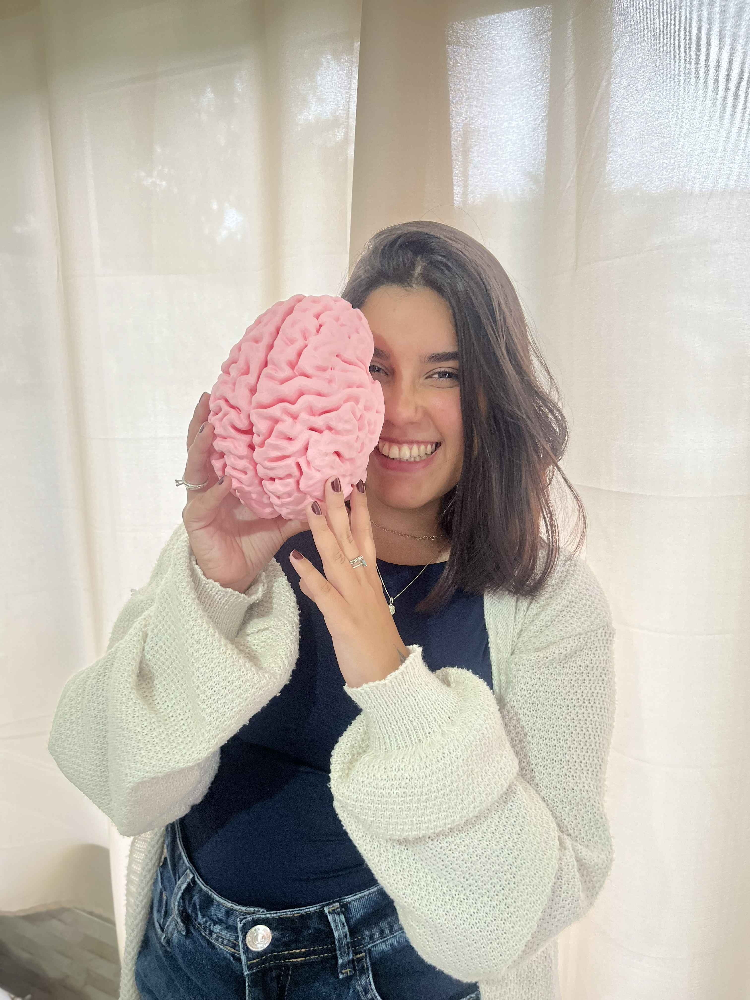

Maria Clara Aranha Gonçalves
Psicóloga - CRP: 05/88798
Sobre mim
Sou graduada em Psicologia com atuação voltada para a clínica individual. Acredito na terapia como um espaço de escuta e acolhimento para lidar com questões de ansiedade, autoestima, repetição de padrões e os desafios cotidianos dos relacionamentos e do autoconhecimento. O atendimento é feito por vídeo chamada, com frequência e horário definidos. A consistência do espaço importa tanto quanto o conteúdo das sessões. Acolho e atendo adultos em atendimentos online, onde quer que você esteja.
Minha abordagem
Sobre a Terapia Cognitivo-Comportamental. Na TCC, o trabalho é colaborativo: não se trata de te dizer o que fazer, mas de construirmos juntos ferramentas para que você compreenda a relação entre seus pensamentos, emoções e comportamentos diante dos desafios que parecem sem saída. Investigamos juntos os padrões e crenças que moldam a sua rotina, buscando estratégias práticas para lidar com o sofrimento emocional e promover mudanças reais na sua qualidade de vida.